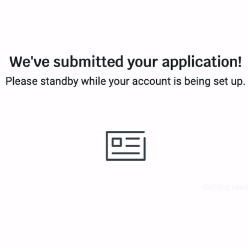
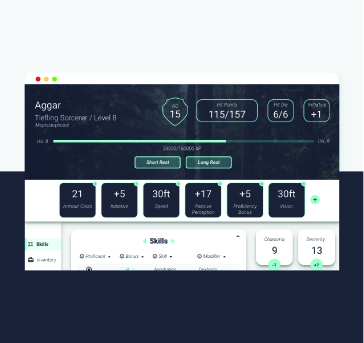
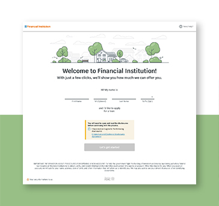
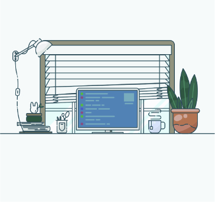
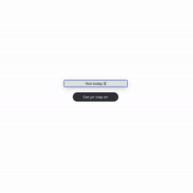
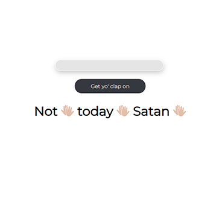

What would it look like if I created a game based on my job? This was the thought I had late one night after the 4th time explaining to someone at a party what a UI/UX designer was. I ended up making a joke that went along the lines of “I’m basically just a pixel pusher,” which got me an awkward laugh in return, but gave me a great idea for a game.
Animated Page Loader
Interaction Design/Accessibility
×

Animated Page Loader
Type: Fiserv Project
Role: Interaction Designer/UX Engineer
Our product had an interesting problem to solve: How did you let a user know that their application was loading, while also letting them know they could navigate away from the page? The main challenge for me with this bit of interaction design is that we had to meet accessibility criteria for users who might be sensitive to motion, while also letting an animation run indefinitely, since the backend process could take anywhere from 20 seconds to 8 minutes. It was really fun to work with the design and engineering team as the bridge between the two. The prototypes I created also helped us test out quick ideas without committing to a full integration in production code and gave us something to test with users.

DnD App
Angular/UI/UX/Design
×
DnD App
Type: Personal Project
Role: UX Designer/Front End Developer
I was introduced to the wonderful world of DnD by my friends and I fell in love with it so much that I wanted to make a web app for it. My friend is a wonderful Java developer and she is helping with all the database elements while I work on the front end and learn Angluar. It's a pretty touch and go project, but if you are interested, feel free to check it out on Github!

Digital Account Opening
Team Lead/Senior UX Designer
×
Digital Account Opening
Type: Fiserv
Role: Team Lead/Senior UX Designer
I’ve managed a team of 3 designers and lead the design efforts of an enterprise level suite of banking products. I’ve collaborated with engineers, business analysts, content writers, product owners, and leadership to scale a product suite for 500+ financial institutions. On a weekly basis I individually contribute to accessibility, user research, wireframing, and high fidelity design hand-off.

User Journey Mapping
User Journey Mapping
×
User Journey Mapping
Type: Fiserv Project
Role: Senior UX Designer
Transitioning to a new team can always be a challenging time but transitioning to a whole new field and vocabulary that has literally hundreds of acronyms is quite the feat. When I joined the mortgage team earlier this year, I had to very quickly and succinctly figure out a way to understand our user base and what their needs were so that I could begin creating intuitive and useful experiences for them as quickly as possible.

Clap Back
HTML/CSS/JS
×

Clap Back
Type: Personal Project
Role: Designer/Developer
My goal as a developer right now is to get as good at Vanilla js as possible, but have fun doing it! I like to send messgaes to my friends with an emphasis on each word and I got really tired of copying and pasting the clap emoji, so I created a simple Javascript form to do it for me. I am currently in the process of making it into a Chrome Extension so I can have it whenever I want!